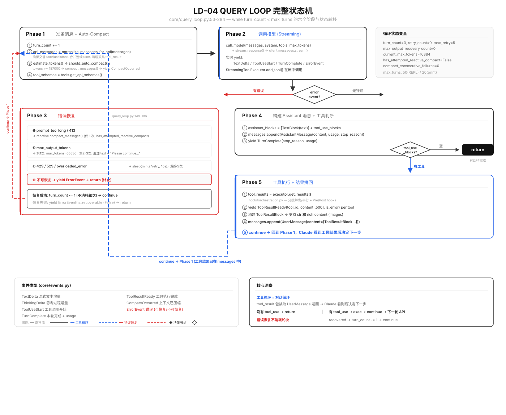
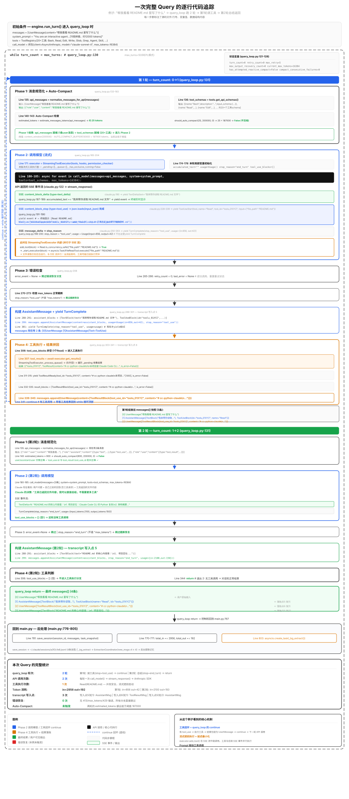

整台 Agent Runtime 的主状态机 -- 不是「业务逻辑之一」，而是 Agent 内核本身
core/query_loop.py:53-284
读完本章你将能回答
query_loop 的每个阶段受哪些 prompt 控制？
六个阶段中有三个直接受特定 prompt 段落控制，理解这个映射关系就理解了「prompt 怎么管代码」。
为什么模型不会在循环中失控——过度工程、盲目重试、无限循环？
12 条 doing_tasks 规则构成了一套「已知缺陷的补丁列表」，每条对治模型的一个具体默认倾向。
长对话中的关键信息是如何在上下文压缩后保留的？
SUMMARIZE_TOOL_RESULTS（事前）+ COMPACT_SYSTEM_PROMPT（事后）构成双重防线。
query_loop() 是一台围绕 transcript（消息列表）运转的状态机。每次输入后：调模型 → 执行工具 → 把结果送回模型 → 直到模型决定停止。
每轮循环经历 5 个阶段：规范化 → 调模型 → 错误恢复 → 落账 → 工具执行。之上叠加 3 套恢复策略。
transcript 的修改集中在 6 处。事件流是实时观察接口，messages 是正式账本。
5 个阶段、3 套错误恢复、2 个退出条件，全在一张图里。

工具循环 = 对话循环
工具结果包装为 UserMessage 送回 → Claude 在下一轮看到后决定下一步。
没工具 → return ｜ 有工具 → continue
退出条件极其简洁：只要 assistant 不再请求工具，循环就结束。
错误恢复不消耗轮次
恢复成功后 turn_count -= 1，防止网络抖动浪费 max_turns 配额。
「帮我看看 README.md 里写了什么」的完整生命周期。

§2 三层消息结构（ContentBlock / Message / Transcript）· §3 五阶段状态机详解 · §4 流式工具提前执行 · §5 三条错误恢复路径 · §6 Prompt 如何管控 QueryLoop · §7 上下文压缩 SUMMARIZE+COMPACT。
报名解锁完整章节